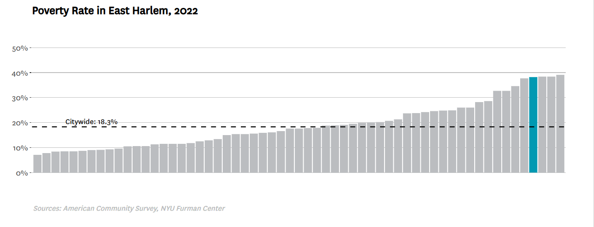

Neighborhoods like East Harlem, Union Square, and East Village in NYC have high levels of air pollution, particularly from PM pollutants (“Exposure to Polluted Air”).
East Harlem Demographics:
High-poverty neighborhoods had 4.5 times more asthma-related emergency visits due to PM2.5 than low-poverty areas (Kheirbek et al).
NYC Department of Health and Mental Hygiene, Environment & Health Data Portal, 2022.
High-poverty neighborhoods have higher risks associated with air pollution: